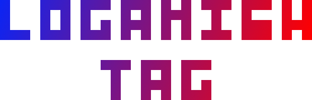

Is our hit game with over 1,000 users (and counting)
Available on:
LOGANISH
UNIV≡RS≡
Loganish Universe is a cartoon series made using
Adobe Animate CC, We are currently writing the first ever episode.